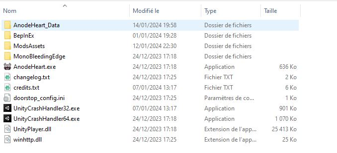

For installing mods or sprites, you need to install the mod framework. This is very simple !
- Download Bepinex x64 (not the x86)
- Unzip the entire content in your game folder Program Files (x86)\Steam\steamapps\common\Chaos Galaxy 2\ 
- Launch the game one time to let Bepinex set up the configuration.
- Now you can quit the game and install plugins and mods !
- If issue with Bepinex, follow their guide